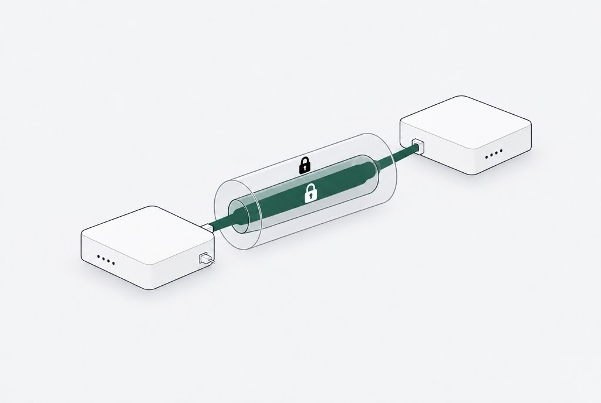
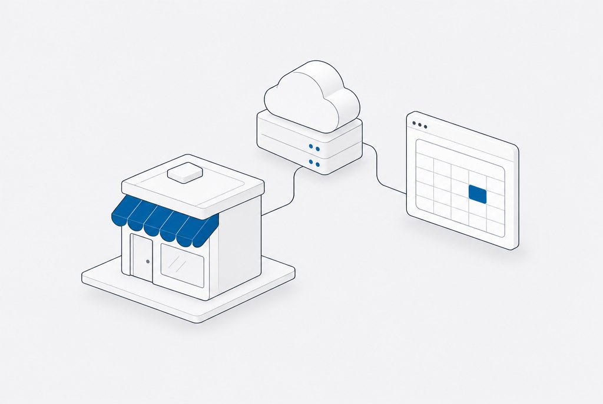
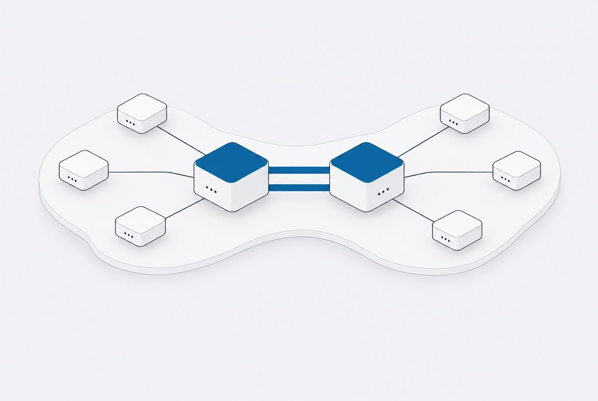
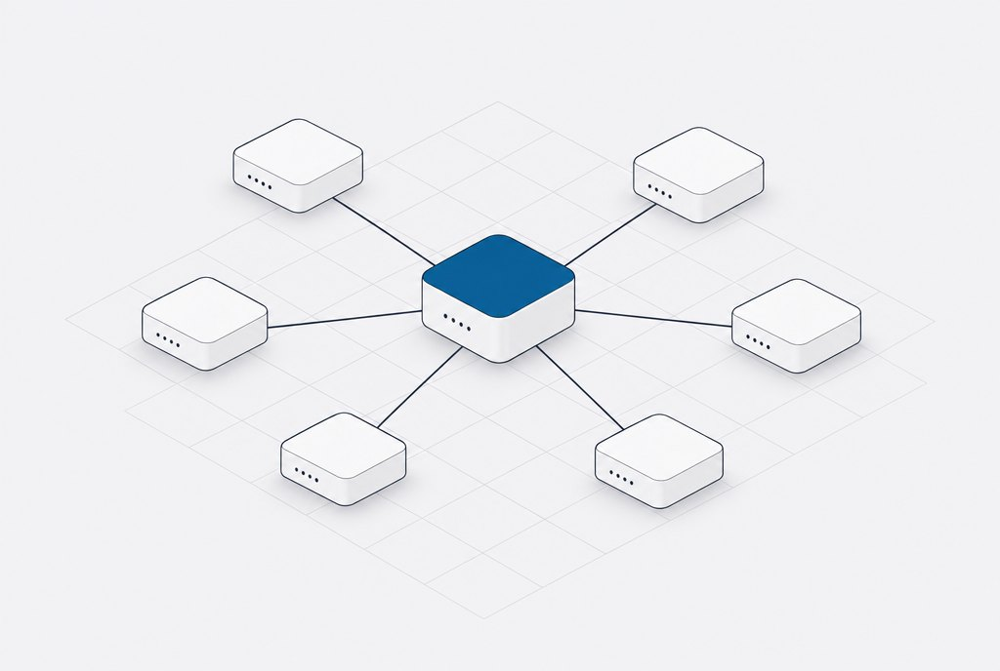
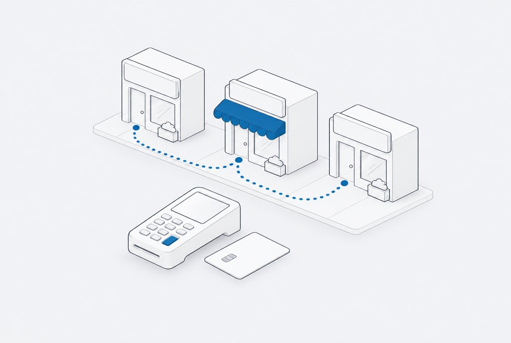
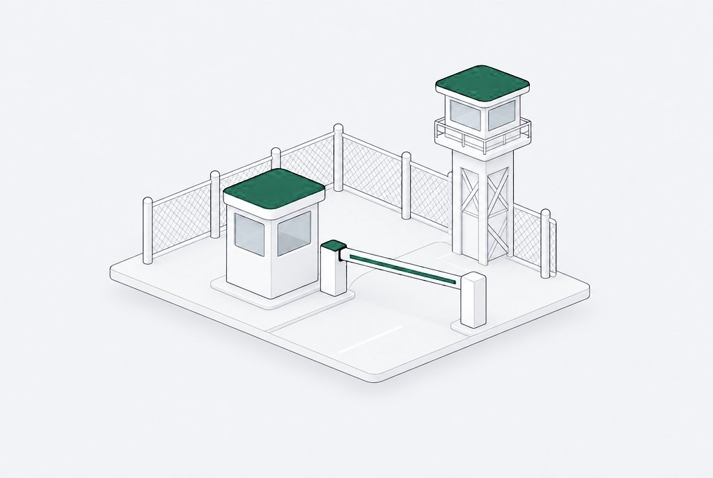

Track record.
Every role, newest first.
From the infantry to the sales floor to Tier 3 engineering, and now CSfC networks and my own clients.
- Engineer and support CSfC networks, which carry classified traffic over commercial hardware inside two independent layers of encryption, for two customer missions.
CSfC · Layered encryption · U.S. Marine Corps · U.S. Navy

- Divine Assisted Care LLC: a professional services site with a custom intake form, backend form handling, and data collection built with HIPAA in mind, plus server and hosting management after launch.
- JBExclusive Studios: a booking platform with online scheduling, a service catalog, and client management, with the domain, DNS, and hosting managed end to end.
- PepTek LLC, a store my partner and I own: WordPress and WooCommerce on our own DigitalOcean server, payment processing, and agents that send customer notifications and handle support. I directed its September 2026 rebuild against written targets for page speed and click counts.
- AI systems of my own: the Multi-Agent AI Operating System, with agents run by Claude Code for email, calendar, and planning, a shared memory on Supabase, and a dashboard rebuilt every morning.
DigitalOcean · WordPress/WooCommerce · Payment APIs · Custom Backends · DNS/Hosting · AI Systems

- Briefed DLA leadership on major project outcomes, including the situation reports after the 2026 infrastructure projects in Hawaii and Japan covering execution, risk, and next actions.
- Built the internal business case that won GitHub Enterprise licensing for the team, then founded the configuration review repository it now runs on. A tool request became the anchor project of the program’s DevSecOps initiative.
- Ran discovery with site points of contact and government stakeholders across a 100+ site enterprise, translating operational requirements into VLAN, firewall, and identity designs.
- Architected an ISE/TACACS+ migration to centralized device authentication across a 100+ site enterprise, the base for Ansible automation at scale.
- Automated STIG compliance reporting with PowerShell, parsing and evaluating 100+ CKL files and cutting manual audit time.
- Authored change implementation plans and cutover runbooks presented to government leadership for approval; wrote the SOPs the team adopted as its provisioning standard.
- Maintained an EVE-NG lab built to production standard to validate changes before they went live, the same approach used to build vendor demo and proof of concept environments.
ACI/APIC · ISE/TACACS+ · Ansible · OpenText NA · GitHub Enterprise · PowerShell · ServiceNow/Jira · EVE-NG

- Translated customer requirements into CUCM dial plan, call routing, and SIP trunk designs across enterprise voice.
- Configured Oracle session border controllers (Acme Packet 3900/4600) for classified and unclassified deployments; managed codec negotiation, TLS/SRTP, call admission control (CAC) policies, and geographic redundancy.
- Led VoIP migrations and RightFax integrations with zero downtime cutovers, walking stakeholders through change management from proposal to closeout.
- Aligned UC infrastructure with STIG and Zero Trust requirements; collaborated with network and security teams across media, signaling, and management planes.
Cisco CUCM · Oracle SBC · SIP/TLS/SRTP · VoIP Migration · Zero Trust
- Conducted site surveys and discovery sessions directly with customers, then presented topology designs and change requests for approval.
- Provided Tier 3 engineering support spanning hundreds of locations: BGP, OSPF, EIGRP, MPLS, DMVPN, RSTP, vPC, LACP at enterprise scale.
- Administered Cisco ACI/APIC data center fabrics and VMware vSphere/vCenter environments: tenant provisioning, EPG/BD policy, virtual switching, and vMotion for critical workloads.
- Deployed Cisco ISE with 802.1X authentication across wired and wireless enterprise segments and remediated DISA STIG findings across network devices.
- Maintained Check Point and Cisco ASA firewall policies, including rule base audits, NAT, and IPS tuning.
BGP/OSPF/EIGRP · DMVPN/IPsec · ACI/APIC · VMware · ISE/802.1X · Check Point/ASA

- Kept customer satisfaction high by translating technical detail into plain terms for users. Promoted to Tier 2 within the first year.
- Supported network connectivity, VPN, and Active Directory; managed tickets through ServiceNow.
ServiceNow · Active Directory · VPN
- Sold merchant card processing to small businesses across a Manassas, Woodbridge, and Fairfax territory, walking into 10 to 20 businesses a day.
- Ran the full cycle alone: prospecting, discovery on processing volume and rates, proposal, objection handling, and close.
- Interviewed and trained new hires joining the sales force.
Discovery · Proposals · Objection Handling · Closing

- Served five years on active duty as MOS 0311 Rifleman and Marine Security Force Guard. Honorably discharged September 2019.
- Worked with the unit career planner in the final year and guided Marines one on one through reenlistment decisions.
- Good Conduct Medal, GWOT Service Medal, Sharpshooter Rifle, Marksman Pistol. Security Force Training (M4Y, Jun 2015).
MOS 0311 · Security Force · Honorable Discharge
